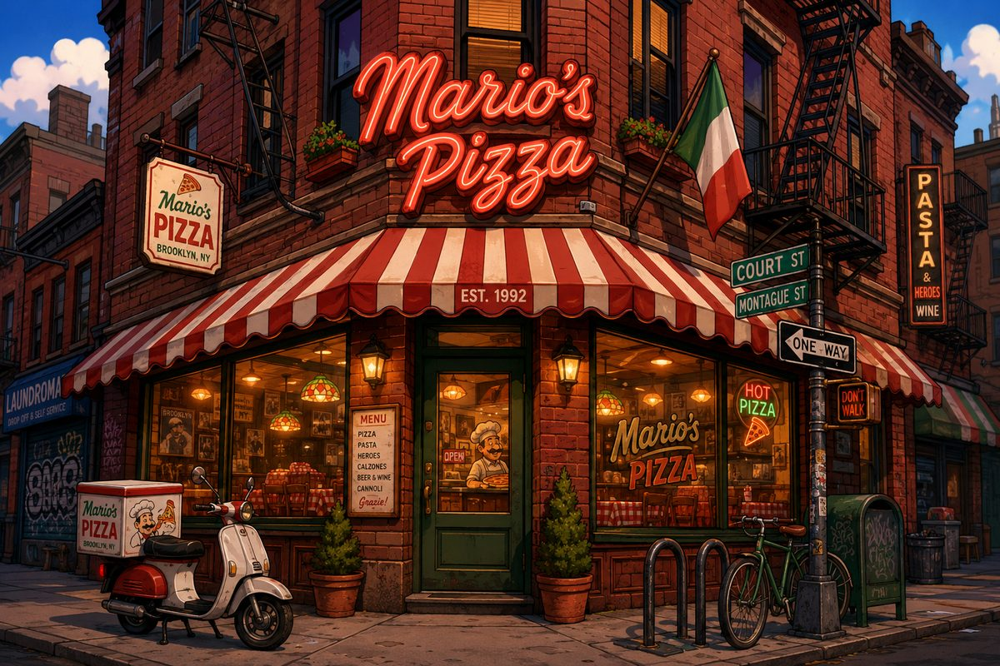

Willkommen


Seit 1992 gibt es Mario's Pizza an der Ecke Court Street / Montague Street. Vor kurzem hat Mario die kleine Familienpizzeria übernommen – und backt weiter nach dem Rezept seiner Nonna: hausgemachter Teig, San-Marzano-Tomaten und Mozzarella aus Kampanien.
Ob im Gastraum, zum Mitnehmen oder bald auch online bestellt: Buon appetito!
Speisekarte
Unsere beliebtesten Pizzen (14 Zoll, handgemacht):


- Margherita – Tomaten, Mozzarella, Basilikum – 12,50 $
- Pepperoni – Tomaten, Mozzarella, Pepperoni-Salami – 14,00 $
- Funghi – Tomaten, Mozzarella, frische Champignons – 14,00 $
- Mario's Special – Schinken, Pilze, Oliven – 16,50 $
- Luigi's Verde – Spinat, Rucola, Pesto – 15,00 $
Die komplette Karte gibt es hier: Speisekarte als PDF (öffnet in einem neuen Tab).
Getränke
- Mineralwasser 0,5 l – 3,00 $
- Cola / Limo 0,4 l – 3,50 $
- Espresso – 3,00 $
So bestellst du
- Pizza aus der Speisekarte aussuchen
- Anrufen oder vorbeikommen – Luigi nimmt die Bestellung auf
- Genießen
Öffnungszeiten
- Montag
- Ruhetag
- Dienstag bis Freitag
- 11:30 – 14:00 Uhr und 17:00 – 22:00 Uhr
- Samstag
- 12:00 – 23:00 Uhr
- Sonntag und Feiertage
- 12:00 – 21:00 Uhr
Anfahrt
Sie finden uns in Brooklyn Heights an der Ecke Court Street / Montague Street – zwei Blocks vom Borough Hall entfernt. Mit der Subway: Linien 2, 3, 4, 5 bis Borough Hall, dann 3 Minuten zu Fuß. Parkplätze sind in Brooklyn knapp – kommen Sie lieber mit der Subway oder dem Fahrrad.
Kontakt
Mario's PizzaCourt Street / Montague Street
Brooklyn, NY 11201, USA
Telefon: +1 718 555 0192
E-Mail: info@marios-pizza.nyc